1. Standard Operating Procedure for the GMT
1.1. Access and Download the Data
Access the GMT on https://gmt-pilot.health
Find your Ward of interest and take the data offline for the Ward(s) of interest
See section Dashboard and taking data offline
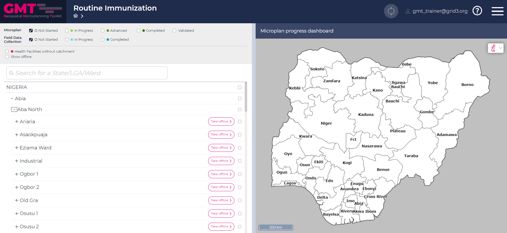
1.2. Review Health Facilities
Review the health facility list and add / delete / rename / modify where necessary. See sections Health Facility deletion and addition and Adding a Health Facility with no location.
Mark if needed as not performing routine immunization. See section Health facilities not performing RI.
Add potentially information about health facility equipment, staff, type etc. See section Health Facility details.
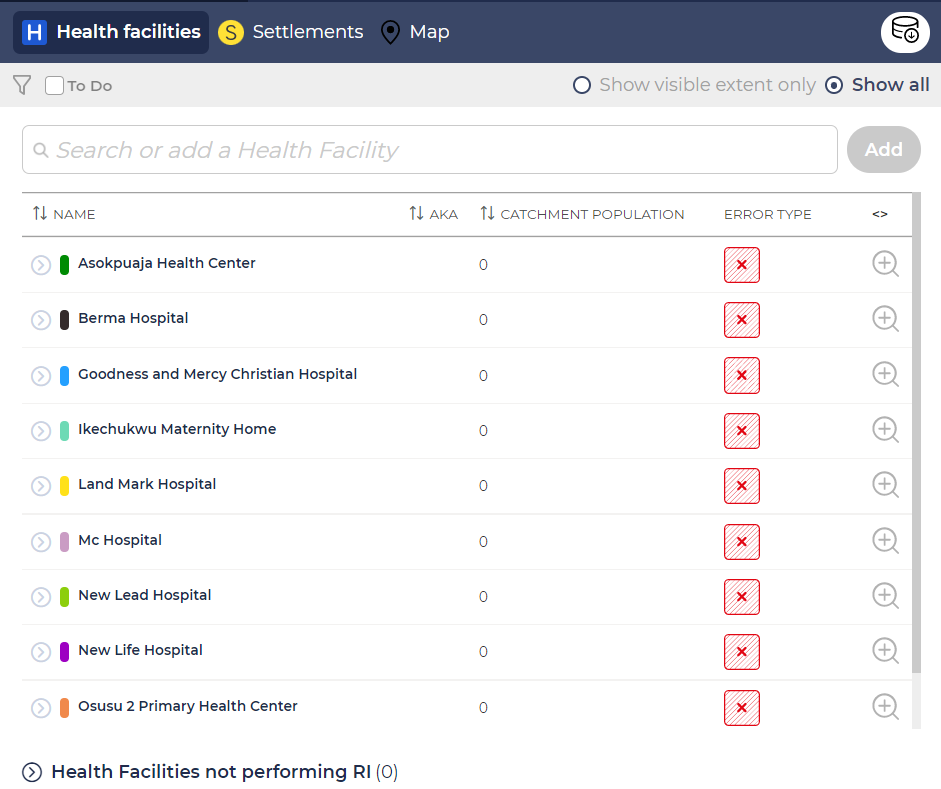
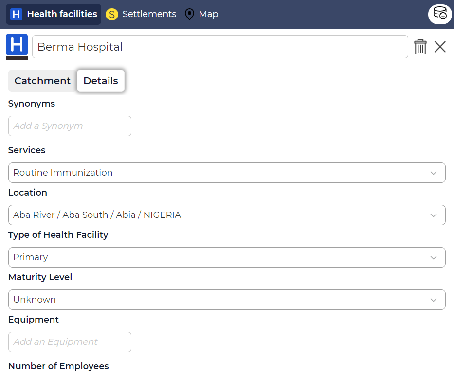
1.3. Review Settlements
Review the settlement list and modify / add / split / merge settlements where needed. See sections Splitting a settlement and Merging settlements.
Mark settlements as uninhabited if appropriate. See section Uninhabited settlements.
Add field estimated population if available as well as settlement attributes, if necessary. See section Settlement details.
Rename machine generated settlements where possible. See section Settlement details.
Use the guides to potentially inform about decisions whether or not to split a settlement. See sections Guides - Distance, Guides - Voronoi and Review the Settlement list / Microplanning.
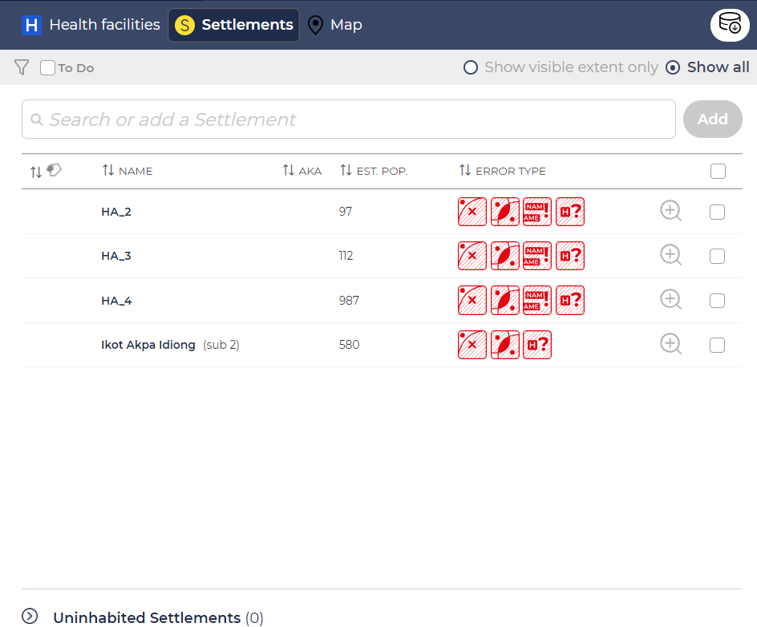
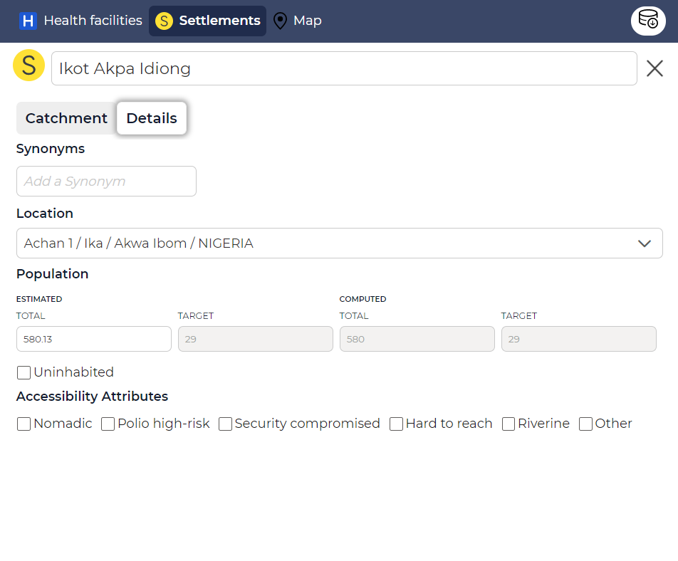
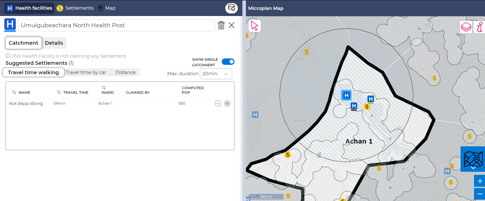
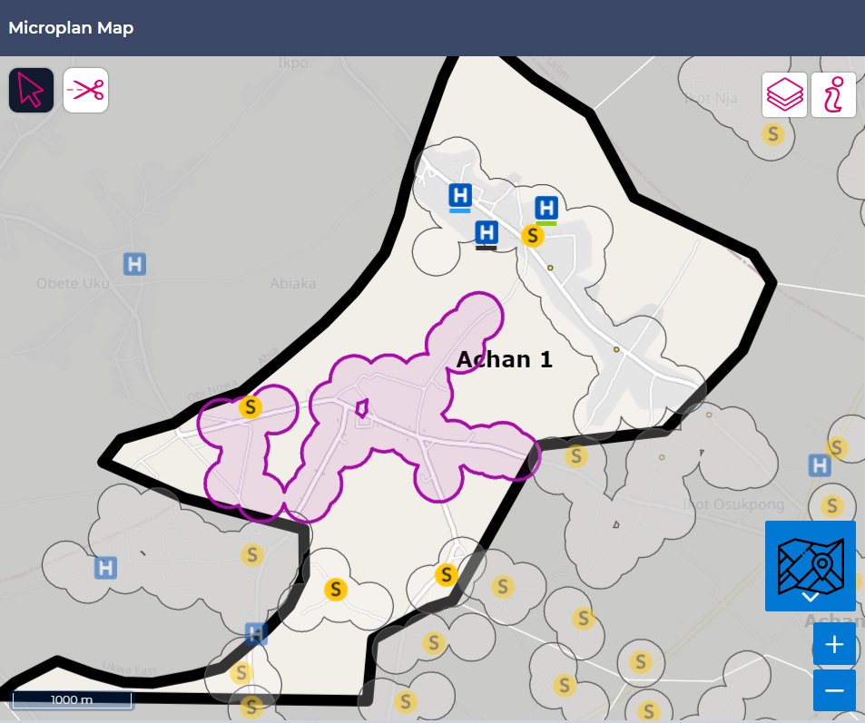
1.4. Collect Missing Information
Collect the data that is still outstanding in a field data collection activity. See section Field Data Collection.
Enter the data in the GMT
The field data collection page:
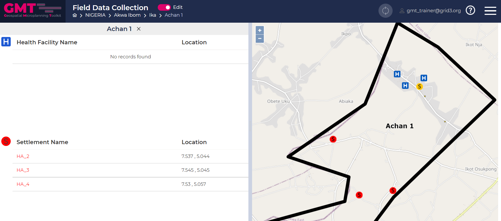
1.5. Perform Microplanning
Either using a manual procedure or the computer based algorithm, proceed to microplanning. See sections Perform Microplanning, Perform microplanning, Perform Microplanning and Perform Microplanning.
Fine-tune based on local knowledge if using the computer based algorithm.
Ensure all settlements are claimed, and no over-allocation exist - no errors remain.
Mark the catchment status for a health facility as complete. See section Mark health facility catchment as complete.
Using the manual way - add all relevant information:
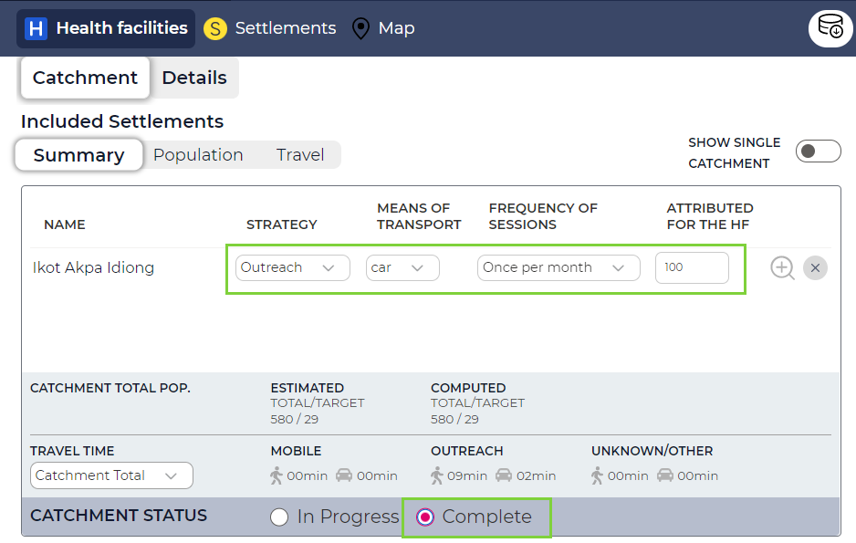
The computer pre-generated microplan:
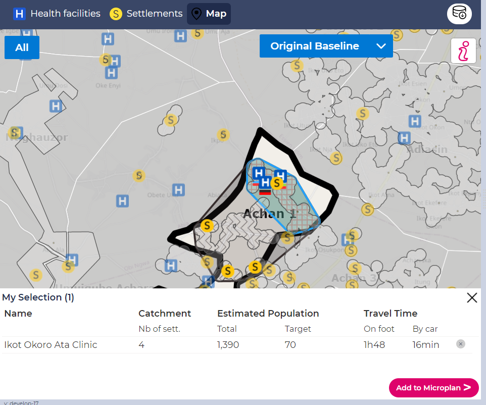
1.6. Synchronize the Data
Ensure that you have connectivity
Synchronize your changes back to the server. See section Synchronize the Data.
1.7. Print the microplan PDF
Navigate back to the dashboard
Print the microplan in PD_HF_wards. See section Print the microplan PDF.
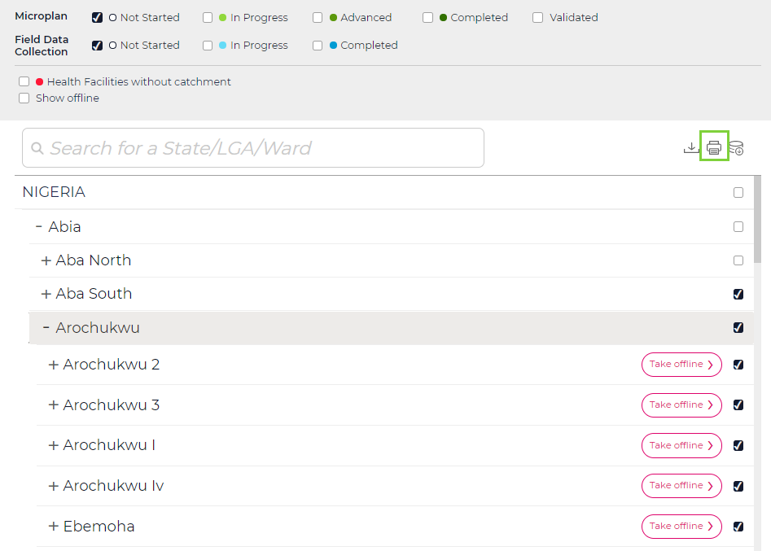